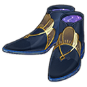

추천 광추
먼 길 끝의 귀로
격파 특수효과·격파 피해 취약
효과 자세히
격파 특수효과가 60% 증가. 적의 약점이 격파될 시 100%의 기본 확률로 대상을 타오름 상태에 빠트리고 받는 격파 피해를 18% 증가시킨다, 지속 2턴. 해당 효과는 2스택 중첩 가능하다
바람에 흩날리는 거짓말
빠른 첫 행동과 방어력 감소
효과 자세히
속도 +18%. 공격 시 기본 확률 120%로 방어력 −16%(2턴), 전투 속도 170 이상이면 별도 −8%(2턴).
땀방울처럼 빛나는 결심
팀 방어력 감소 보강
효과 자세히
장착한 캐릭터는 적 명중 시 만일 해당 목표가 함락 상태가 아닐 경우 100%의 기본 확률로 대상을 함락 상태에 빠트린다. 함락 상태의 적은 방어력이 16% 감소. 지속 1턴
고독의 치유
격파 특수효과와 처치 시 에너지
효과 자세히
격파 특수효과 +40%. 필살기 → 지속 피해 +48%(2턴). 자신의 지속 피해가 적용된 적이 처치되면 에너지 +6pt.
초보자 임무 시작 전
효과 명중과 방어력 감소 적 공격 시 에너지
효과 자세히
효과 명중이 40% 증가. 방어력이 감소된 적을 공격하면 에너지를 8pt 회복
추천 유물
유성을 쫓는 괴도 2 + 꿈을 조작하는 시계공 2 · 아공간 이상 사물 수용소 2
- 머리
 주옵션HP부옵션효과 명중 · 속도 · 격파 특수효과 · HP%
주옵션HP부옵션효과 명중 · 속도 · 격파 특수효과 · HP% - 손
 주옵션공격력부옵션효과 명중 · 속도 · 격파 특수효과 · HP%
주옵션공격력부옵션효과 명중 · 속도 · 격파 특수효과 · HP% - 몸통
 주옵션효과 명중부옵션속도 · 격파 특수효과 · HP%
주옵션효과 명중부옵션속도 · 격파 특수효과 · HP% - 다리

주옵션속도부옵션효과 명중 · 격파 특수효과 · HP% - 구체
 주옵션HP% / 방어력%부옵션효과 명중 · 속도 · 격파 특수효과 · HP% (주옵션 제외)
주옵션HP% / 방어력%부옵션효과 명중 · 속도 · 격파 특수효과 · HP% (주옵션 제외) - 매듭
 주옵션격파 특수효과 / 에너지 회복효율부옵션효과 명중 · 속도 · 격파 특수효과 (주옵션 제외) · HP%
주옵션격파 특수효과 / 에너지 회복효율부옵션효과 명중 · 속도 · 격파 특수효과 (주옵션 제외) · HP%
이 조합을 추천하는 이유
괴도와 시계공 2세트로 격파 특수효과를 확보하며 사물 수용소를 사용합니다.
곤충 재앙을 잠재우는 철기군 4 · 겁화 연등의 연마궁 2
- 머리
 주옵션HP부옵션효과 명중 · 속도 · 격파 특수효과 · HP%
주옵션HP부옵션효과 명중 · 속도 · 격파 특수효과 · HP% - 손
 주옵션공격력부옵션효과 명중 · 속도 · 격파 특수효과 · HP%
주옵션공격력부옵션효과 명중 · 속도 · 격파 특수효과 · HP% - 몸통
 주옵션효과 명중부옵션속도 · 격파 특수효과 · HP%
주옵션효과 명중부옵션속도 · 격파 특수효과 · HP% - 다리
 주옵션속도부옵션효과 명중 · 격파 특수효과 · HP%
주옵션속도부옵션효과 명중 · 격파 특수효과 · HP% - 구체 주옵션HP% / 방어력%부옵션효과 명중 · 속도 · 격파 특수효과 · HP% (주옵션 제외)
- 매듭
 주옵션격파 특수효과 / 에너지 회복효율부옵션효과 명중 · 속도 · 격파 특수효과 (주옵션 제외) · HP%
주옵션격파 특수효과 / 에너지 회복효율부옵션효과 명중 · 속도 · 격파 특수효과 (주옵션 제외) · HP%
이 조합을 추천하는 이유
종결 시트의 철기군·연마궁입니다. 추천 시트에는 격파·속도 2세트 조합도 제시됩니다.
이 정도면 잘 키웠다
선택한 세팅 기준 · —는 확인된 수치 없음
- 격특 전투 중
격파 유물을 2세트씩 조합하는 4.7 세팅입니다.
| 스탯 | 추천 스탯 | 준종결 | 종결 |
|---|---|---|---|
| 속도 | 160+ | — | — |
| 효과 명중 | 66.7% | — | — |
| 격파 특수효과 | 전투 220% | — | — |
세팅 기준·출처
4.7 세팅 시트는 격파 특수효과 220%를 전투 중 기준으로 표기합니다. 효과 명중 추천은 66.7%입니다. 확인한 자료에 독립적인 준종결 수치가 없습니다.
- 종결 명함·전광
- 준종결 행동 당김·지연 없음
철기군·연마궁과 자연 행동 속도를 조율합니다.
| 스탯 | 추천 스탯 | 준종결 | 종결 |
|---|---|---|---|
| 속도 | 160+ | 171.5+[1]자체 계산 · 속도 변화와 행동 당김·지연이 없는 상태에서 첫 3라운드 350 행동값 전에 6회 행동하는 수치입니다. 6×10000÷350≈171.429이므로 171.5를 사용합니다.자체 계산 | 187 |
| 효과 명중 | — | — | 66%[2]종결 시트 표기는 66%입니다. 특정 효과의 확정 적중 여부는 적 효과 저항과 효과의 기본 확률에 따라 달라집니다. |
| 격파 특수효과 | — | — | 250%[3]종결 원문에는 전투 버프 포함 여부를 따로 적지 않았습니다. |
세팅 기준·출처
4.7 종결 탭의 명함·전용 광추 기준입니다. 속도는 행동 당김·지연이 없는 동일한 전투 조건에서 160+ 권장과 187 종결 사이의 준종결을 계산했습니다.
성혼과 추천 돌파
성혼 1은 주 대상의 격파 효율을, 성혼 2는 반복 격파 전투에서 필살기와 아군 행동 횟수를 높입니다.
1기도 대상 약점 격파 효율 +50%추천
여우의 기도를 보유한 아군의 약점 격파 효율이 50% 증가
2격파 시 에너지 +3pt·필살기로 아군 행동 24% 당김추천
적의 약점이 격파될 시 망귀인이 에너지를 3pt 회복. 필살기 발동 후 모든 아군의 행동 게이지가 24% 증가
3전투 스킬 +2 · 일반 공격 +1
전투 스킬 +2 · 일반 공격 +1
4기도 대상 격파 피해 +20%
여우의 기도를 보유한 아군이 가하는 격파 피해가 20% 증가
5필살기 +2 · 특성 +2
필살기 +2 · 특성 +2
6염화 중 아군 전원에게 기도·자신 약점 격파 효율 +50%
망귀인의 약점 격파 효율이 50% 증가. 망귀인이 염화 상태일 시 여우의 기도 효과가 모든 아군에게 적용된다
추천 파티


기본 운영과 행적
기본 운영
부트힐·라파는 여우의 기도를 유지해 약점이 다른 적도 대응하세요. 자체 약점 무시가 있는 반디와 편성할 때 영사나 갤러거에게 기도를 주면 강인성 감소가 늘어납니다.
행적 우선순위
특성 > 전투 스킬 = 필살기 = 일반 공격. 격파 특수효과 조건과 여우의 기도 지원 행적을 모두 해금하세요.
아하 속도 계산기 →